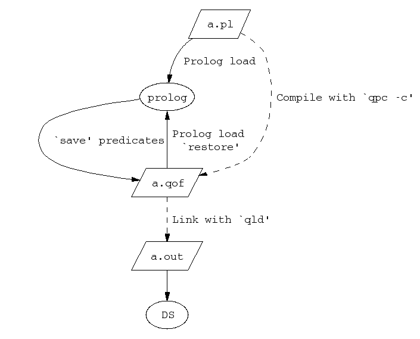

Load Context

Load Context
By calling prolog_load_context/[2,3] you can determine:
- whether the current context is in a loading/compilation or a start-up
of an application (see the above figure).
- the current Prolog load/compilation context: module, file, directory
or stream.